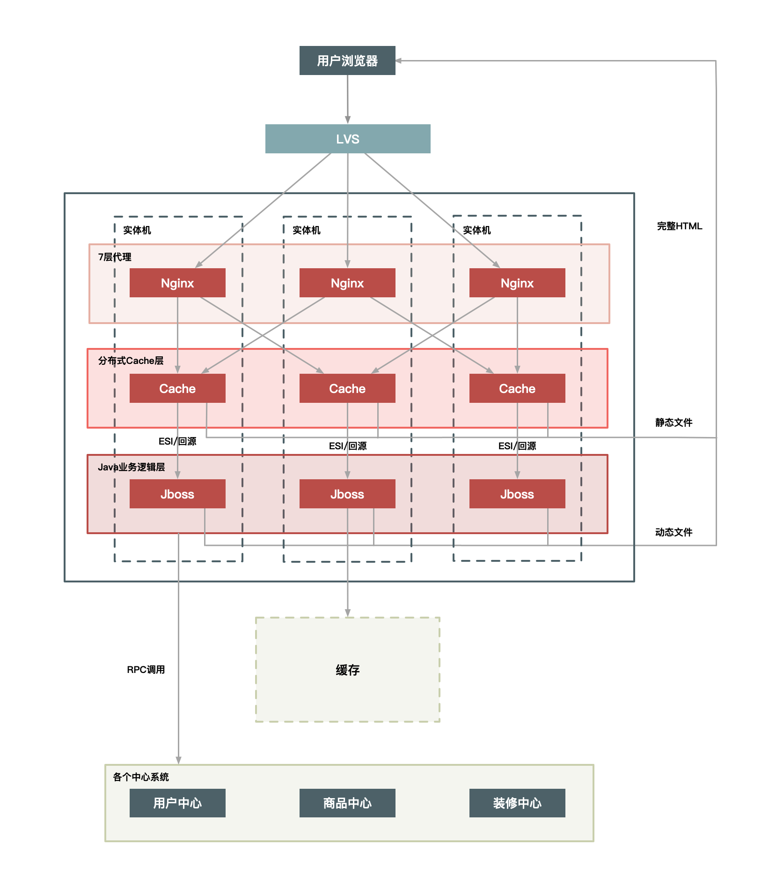

1. Overview#
1.1 并发读写#
秒杀要解决的主要问题是：并发读与并发写。
并发读的优化理念是尽量减少用户到服务端来读数据，或者让他们读更少的数据；并发写的处理原则一样，要求我们在数据库层面独立出一个库，做特殊的处理。
其次，还需要针对秒杀系统做一些保护，针对意料之外的情况设计兜底方案，以防止最坏的情况发生。
1.2 API设计原则#
值得注意的地方是：如果想打造并维护一个超大流量并发读写、高性能、高可用的系统，在整个用户请求路径上从浏览器到服务端我们要遵循几个原则，就是保证用户请求的数据尽量少、请求数尽量少、路径尽量短、依赖尽量少，不要有单点
1.3 秒杀架构原则#
1.3.1 高可用#
整个系统架构需要满足高可用性，流量符合预期的时候肯定要稳定，就是超出预期也同样不能掉链子，保证秒杀产品顺利卖出。
1.3.2 一致性#
数据必须一致，即成交总量必须和设定的数量一致。
1.3.3 高可用#
系统的性能要足够强，支撑足够大的流量，不仅是服务端要做极致的性能优化，而且在整个请求链路上都要做协同的优化，每个地方都要快一点，整个系统就完美了。
本文将从这三个原则上来分别进行详细说明。
2. 架构原则#
秒杀系统本质上是一个满足大并发、高性能和高可用的分布式系统。
2.1 数据尽量少#
用户请求的数据能少就少，请求的数据包括上传给系统的数据和系统返回给用户的数据。
因为这些数据在网络上传输需要时间，其次不管是请求数据还是返回数据都需要服务器处理，而服务器在写网络的时候通常都要做压缩和字符编码，这些都非常消耗CPU，所以减少传输的数据量可以显著减少CPU的使用。
同样，数据尽量少还要求系统依赖的数据能少就少，包括系统完成某些业务逻辑需要读取和保存的数据，这些数据一般是和后台服务以及数据库打交道的。调用其他服务会涉及数据的序列化和反序列化，这也是CPU的一大杀手，同样也会增加延时。而且数据库本身也很容易成为瓶颈，因此越少和数据库打交道越好。
2.2 请求数尽量少#
用户请求的页面返回后，浏览器渲染这个页面还要包含其他的额外请求，比如说，这个页面依赖的 CSS/JavaScript、图片，以及 Ajax 请求等等都定义为“额外请求”，这些额外请求应该尽量少。因为浏览器每发出一个请求都多少会有一些消耗，例如建立连接要做三次握手，有的时候有页面依赖或者连接数限制，一些请求（例如 JavaScript）还需要串行加载等。另外，如果不同请求的域名不一样的话，还涉及这些域名的 DNS 解析，可能会耗时更久。所以你要记住的是，减少请求数可以显著减少以上这些因素导致的资源消耗。
例如，减少请求数最常用的一个实践就是合并 CSS 和 JavaScript 文件，把多个 JavaScript 文件合并成一个文件，在 URL 中用逗号隔开（https://g.xxx.com/tm/xx-b/4.0.94/mods/??module-preview/index.xtpl.js,module-jhs/index.xtpl.js,module-focus/index.xtpl.js）。这种方式在服务端仍然是单个文件各自存放，只是服务端会有一个组件解析这个 URL，然后动态把这些文件合并起来一起返回。
2.3 路径要尽量短#
路径指的是用户发出请求到返回数据这个过程中需要经过的中间节点的数量。
通常，这些节点可以表示为一个系统或者一个新的 Socket 连接（比如代理服务器只是创建一个新的 Socket 连接来转发请求）。每经过一个节点，一般都会产生一个新的 Socket 连接。
然而，每增加一个连接都会增加新的不确定性。从概率统计上来说，假如一次请求经过 5 个节点，每个节点的可用性是 99.9% 的话，那么整个请求的可用性是：99.9% 的 5 次方，约等于 99.5%。
所以缩短请求路径不仅可以增加可用性，同样可以有效提升性能（减少中间节点可以减少数据的序列化与反序列化），并减少延时（可以减少网络传输耗时）。
要缩短访问路径可以将多个相互有强依赖的应用合并部署在一起，将远程过程调用变成JVM内部的方法调用。
2.4 依赖要尽量少#
所谓依赖，指的是要完成一次用户请求必须依赖的系统或者服务。
举个例子，比如说你要展示秒杀页面，而这个页面必须强依赖商品信息、用户信息，还有其他如优惠券、成交列表等这些对秒杀不是非要不可的信息（弱依赖），这些弱依赖在紧急情况下就可以去掉。
要减少依赖，我们可以给系统进行分级，比如 0 级系统、1 级系统、2 级系统、3 级系统，0 级系统如果是最重要的系统，那么 0 级系统强依赖的系统也同样是最重要的系统，以此类推。
注意，0 级系统要尽量减少对 1 级系统的强依赖，防止重要的系统被不重要的系统拖垮。例如支付系统是 0 级系统，而优惠券是 1 级系统的话，在极端情况下可以把优惠券给降级，防止支付系统被优惠券这个 1 级系统给拖垮。
2.5 不要有单点#
不能有单点，因为单点意味着没有备份，风险不可控，设计分布式系统的一个最重要的原则就是消除单点。
如何避免单点？ —-> 避免将服务的状态和机器绑定，即把服务无状态化，这样服务就可以在机器中随意移动了。
如何那把服务的状态和机器解耦呢？这里也有很多实现方式。例如把和机器相关的配置动态化，这些参数可以通过配置中心来动态推送，在服务启动时动态拉取下来，我们在这些配置中心设置一些规则来方便地改变这些映射关系。
应用无状态化是有效避免单点的一种方式，但是像存储服务本身很难无状态化，因为数据要存储在磁盘上，本身就要和机器绑定，那么这种场景一般要通过冗余多个备份的方式来解决单点问题。
3. 不同场景下的不同架构案例#
如果你想快速搭建一个简单的秒杀系统，只需要把你的商品购买页面增加一个“定时上架”功能，仅在秒杀开始时才让用户看到购买按钮，当商品的库存卖完了也就结束了。这就是当时第一个版本的秒杀系统实现方式。
但随着请求量的加大（比如从 1w/s 到了 10w/s 的量级），这个简单的架构很快就遇到了瓶颈，因此需要做架构改造来提升系统性能。这些架构改造包括：
- 把秒杀系统独立出来单独打造一个系统，这样可以有针对性地做优化，例如这个独立出来的系统就减少了店铺装修的功能，减少了页面的复杂度；
- 在系统部署上也独立做一个机器集群，这样秒杀的大流量就不会影响到正常的商品购买集群的机器负载；
- 将热点数据（如库存数据）单独放到一个缓存系统中，以提高“读性能”；
- 增加秒杀答题，防止有秒杀器抢单。
此时秒杀已经成为了一个独立的新系统，另外核心的一些数据放到了缓存当中，其他的关联系统也都以独立集群的方式进行部署。
但是这个架构仍然无法支持超过100w/s的请求量，因此为了进一步提高秒杀系统的性能，又对架构做了进一步的升级，比如：
- 对页面进行彻底的动静分离，使得用户秒杀时不需要刷新整个页面，而只需要点击抢宝按钮，借此把页面刷新的数据降到最少；
- 在服务端对秒杀商品进行本地缓存，不需要再调用依赖系统的后台服务获取数据，甚至不需要去公共的缓存集群中查询数据，这样不仅可以减少系统调用，而且能够避免压垮公共缓存集群。
- 增加系统限流保护，防止最坏的情况发生
此时整个系统架构变成了这个样子，已经对页面进行了进一步的静态化，秒杀过程当中就不需要刷新整个页面了，只需要向服务端请求很少的动态数据。而且最关键的详情和交易系统都增加了本地缓存，来提前缓存秒杀商品的信息，热点数据库也做了独立部署。
从前面的几次升级来看，其实越到后面需要定制的地方越多，也就是越“不通用”。例如，把秒杀商品缓存在每台机器的内存中，这种方式显然不适合太多的商品同时进行秒杀的情况，因为单机的内存始终有限。所以要取得极致的性能，就要在其他地方（比如，通用性、易用性、成本等方面）有所牺牲。
4. 动静分离的方案#
秒杀系统需要让请求效率足够高 - 提高单次请求的效率，减少没必要的请求。
4.1 何为动静数据#
将用户请求的数据（如HTML）划分为动态数据和静态数据。而动态静态数据的划分，在于看页面中输出的数据是否和URL，浏览者，时间，地域相关，以及是否含有Cookie等私密数据。
- 对很多媒体类的网站来说，无论谁来看文章，展示的数据都是一样的，那么哪怕这是个动态页面，它仍然是个典型的静态数据。
- 访问淘宝的首页，每个人看到的页面可能都是不一样的，其中包含了很多根据访问者个人信息进行的推荐，这些个性化的数据就称为动态数据。
这里再强调一下，我们所说的静态数据，不能仅仅理解为传统意义上完全存在磁盘上的 HTML 页面，它也可能是经过 Java 系统产生的页面，但是它输出的页面本身不包含上面所说的那些因素。也就是所谓“动态”还是“静态”，并不是说数据本身是否动静，而是数据中是否含有和访问者相关的个性化数据。
这样做动静分离的时候，我们就可以对分离出来的静态数据做缓存，有了缓存以后，静态数据的访问效率肯定就提高了。
4.2 如何对静态数据做缓存？#
4.2.1 距离用户最近#
将静态数据缓存到离用户最近的地方。静态数据就是那些相对不会变化的数据，因此可以做缓存。常见的，我们可以缓存在：
- 用户浏览器
- CDN上
- 服务端的Cache中
4.2.2 静态化改造要直接缓存HTTP连接#
系统的静态化改造是直接缓存HTTP连接而不仅仅是数据了。如下图所示，Web代理服务器根据请求URL直接去除对应的HTTP响应头和响应体然后直接返回，这个响应过程连HTTP协议都不用重新组装，甚至连HTTP请求头也不需要解析。

4.2.3 缓存语言#
不同语言写的cache软件处理缓存数据的效率也各不相同。以Java为例，Java不擅长处理大量连接请求，每个连接消耗的内存会比较多，Servlet容器解析HTTP协议比较慢。所以可以不在Java层做缓存，而是直接在Web服务器层上做，这样就可以屏蔽Java的一些弱点；而相比起来，Web服务器(Nginx, Apache, Varnish)会更加擅长处理大并发的静态文件请求。
4.3 静态数据处理方案#
以商品详情页为例：
4.3.1 URL唯一化#
要缓存整个HTTP连接，以URL作为缓存的key
4.3.2 分离浏览者相关的因素#
分离用户的相关信息，是否登录以及登录身份等等。
4.3.3 分离时间因素#
服务端输出的是哪也通过动态请求获取
4.3.4 异步化地域因素#
详情页面上与地域相关的因素做成异步获取的方式
#
服务端输出的页面包含的 Cookie 可以通过代码软件来删除，如 Web 服务器 Varnish 可以通过 unset req.http.cookie 命令去掉 Cookie。注意，这里说的去掉 Cookie 并不是用户端收到的页面就不含 Cookie 了，而是说，在缓存的静态数据中不含有 Cookie。
4.4 动态数据处理方案#
4.4.1 ESI (Edge Side Includes)#
在Web代理服务器上做动态内容请求，并将请求插入到静态页面中，当用户拿到页面时已经是一个完整的页面了。对服务端性能有影响，但是用户体验会比较好
4.4.2 CSI (Client Side Include)#
单独发出异步Javascript请求，向服务端获取动态内容。这种方式服务端性能更好，但是用户端可能会有延时，体验会差一些
4.5 动静分离架构方案#
4.5.1 实体机单机部署#
这种方案是将虚拟机改为实体机，以增大 Cache 的容量，并且采用了一致性 Hash 分组的方式来提升命中率。这里将 Cache 分成若干组，是希望能达到命中率和访问热点的平衡。Hash 分组越少，缓存的命中率肯定就会越高，但短板是也会使单个商品集中在一个分组中，容易导致 Cache 被击穿，所以我们应该适当增加多个相同的分组，来平衡访问热点和命中率的问题。
Nginx+Cache+Java结构实体机单机部署

这种部署方式有以下几个优点：
- 没有网络瓶颈，而且能使用大内存；
- 既能提升命中率，又能减少 Gzip 压缩；
- 减少 Cache 失效压力，因为采用定时失效方式，例如只缓存 3 秒钟，过期即自动失效。
这个方案中，虽然把通常只需要虚拟机或者容器运行的 Java 应用换成实体机，优势很明显，它会增加单机的内存容量，但是一定程度上也造成了 CPU 的浪费，因为单个的 Java 进程很难用完整个实体机的 CPU。
另外就是，一个实体机上部署了 Java 应用又作为 Cache 来使用，这造成了运维上的高复杂度，所以这是一个折中的方案。如果你的公司里，没有更多的系统有类似需求，那么这样做也比较合适，如果你们有多个业务系统都有静态化改造的需求，那还是建议把 Cache 层单独抽出来公用比较合理，如下面的方案 2 所示。
4.5.2 统一Cache层#
所谓统一 Cache 层，就是将单机的 Cache 统一分离出来，形成一个单独的 Cache 集群。统一 Cache 层是个更理想的可推广方案，该方案的结构图如下：

统一Cache层，可以减少运维成本，也方便接入其他静态化系统，还有以下优点：
- 单独一个 Cache 层，可以减少多个应用接入时使用 Cache 的成本。这样接入的应用只要维护自己的 Java 系统就好，不需要单独维护 Cache，而只关心如何使用即可。
- 统一 Cache 的方案更易于维护，如后面加强监控、配置的自动化，只需要一套解决方案就行，统一起来维护升级也比较方便。
- 可以共享内存，最大化利用内存，不同系统之间的内存可以动态切换，从而能够有效应对各种攻击。
这种方案也会带来一些问题。比如：
- Cache 层内部交换网络成为瓶颈；
- 缓存服务器的网卡也会是瓶颈；
- 机器少风险较大，挂掉一台就会影响很大一部分缓存数据。
要解决上面这些问题，可以再对 Cache 做 Hash 分组，即一组 Cache 缓存的内容相同，这样能够避免热点数据过度集中导致新的瓶颈产生。
4.5.3 使用CDN#
在将整个系统做动静分离后，我们自然会想到更进一步的方案，就是将 Cache 进一步前移到 CDN 上，因为 CDN 离用户最近，效果会更好。
有几个问题需要解决：
- 失效问题
前面我们也有提到过缓存时效的问题，不知道你有没有理解，我再来解释一下。谈到静态数据时，我说过一个关键词叫“相对不变”，它的言外之意是“可能会变化”。比如一篇文章，现在不变，但如果你发现个错别字，是不是就会变化了？如果你的缓存时效很长，那用户端在很长一段时间内看到的都是错的。所以，这个方案中也是，我们需要保证 CDN 可以在秒级时间内，让分布在全国各地的 Cache 同时失效，这对 CDN 的失效系统要求很高。
- 命中率问题
Cache 最重要的一个衡量指标就是“高命中率”，不然 Cache 的存在就失去了意义。同样，如果将数据全部放到全国的 CDN 上，必然导致 Cache 分散，而 Cache 分散又会导致访问请求命中同一个 Cache 的可能性降低，那么命中率就成为一个问题。
- 发布更新问题
如果一个业务系统每周都有日常业务需要发布，那么发布系统必须足够简洁高效，而且你还要考虑有问题时快速回滚和排查问题的简便性。
从前面的分析来看，将商品详情系统放到全国的所有 CDN 节点上是不太现实的，因为存在失效问题、命中率问题以及系统的发布更新问题。那么是否可以选择若干个节点来尝试实施呢？答案是“可以”，但是这样的节点需要满足几个条件：
- 靠近访问量比较集中的地区
- 离主站相对较远
- 节点到主站间的网络比较好，比较稳定
- 节点容量大，不会占用其他CDN太多的资源
基于上面几个因素，选择 CDN 的二级 Cache 比较合适，因为二级 Cache 数量偏少，容量也更大，让用户的请求先回源的 CDN 的二级 Cache 中，如果没命中再回源站获取数据，部署方式如下图所示：

使用 CDN 的二级 Cache 作为缓存，可以达到和当前服务端静态化 Cache 类似的命中率，因为节点数不多，Cache 不是很分散，访问量也比较集中，这样也就解决了命中率问题，同时能够给用户最好的访问体验，是当前比较理想的一种 CDN 化方案。